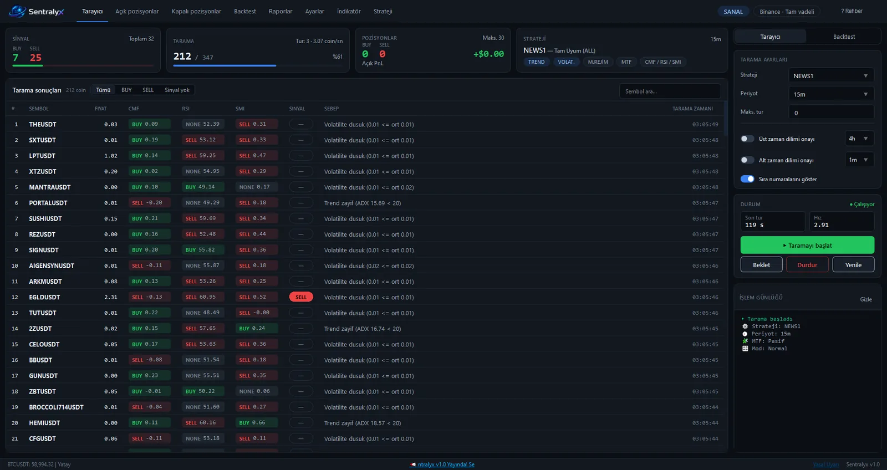
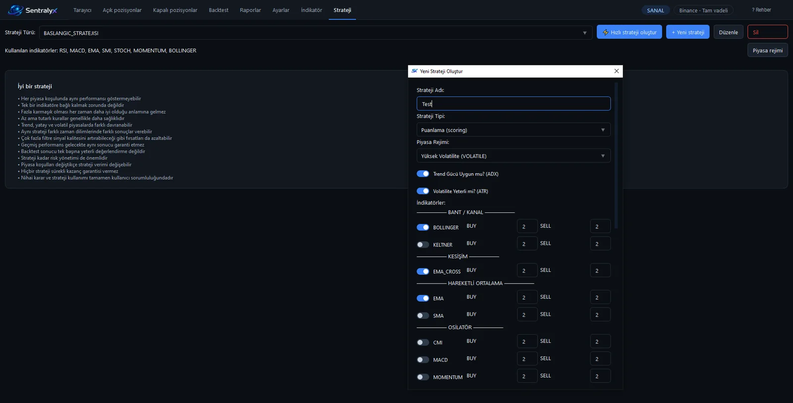

How it works
How Sentralyx Works — What It Does and Doesn't Do
Sentralyx is desktop trading software that analyzes crypto markets, builds strategies, runs backtests, and automates trading processes.
When the rules are met, the system acts
The goal is to free the user from constant chart monitoring, link decision-making to specific rules, and enable disciplined application of the same strategy.
When suitable conditions arise, it:
Sentralyx continuously scans the market and checks the strategy conditions defined by the user.
- Identifies trading opportunities
- Determines entry levels
- Calculates stop-loss levels
- Creates target levels
- Protects profit with trailing stop and break-even
- Tracks open positions
- Reports results and trading history
In this process, the user can see which rules the system is looking for to trade and under which conditions it does not open trades.

What can you do with Sentralyx?
Sentralyx is desktop trading software developed to systematically analyze crypto markets, create strategy rules, test on historical data, and connect trading processes to automation.
Market scanning
Tracks multiple cryptocurrencies simultaneously to find opportunities that match strategy conditions.
Strategy creation
Users can link their own trading logic to specific rules. The goal is to work with defined rules instead of instant emotions or predictions.
Backtest
Prepared strategies can be tested on historical market data.
Backtest results do not guarantee the same performance in the future; they are used to analyze the strategy's behavior under past conditions.
Trading and risk management
Trading components such as entry, stop-loss, target, and position size are handled systematically.
Open position tracking
Open trades are tracked and can be managed according to defined trading rules.
Reporting
Trading history, strategy results, and performance data can be analyzed.
Not an idea, a working application
Sentralyx is not just an idea, signal group, or theoretical project. It is an independent desktop trading software actively developed with real user workflows.




What Sentralyx doesn't do
Sentralyx:
- Does not guarantee profit
- Does not claim to predict future prices with certainty
- Does not provide investment advisory services
- Does not promise profit in all market conditions
- Does not perform risk-free trading on behalf of the user
As with any trading strategy, there is a possibility of loss. Sentralyx's goal is not to eliminate risk, but to make the trading process more systematic, measurable, and rule-based.
User control
The user decides which strategy to use, which markets to work in, and which risk levels to accept.
Sentralyx is a decision support and automation tool; final trading responsibility lies with the user.
The information on this page is to explain the product scope; it is not investment advice.
Related pages
Try your strategy in virtual mode today
Download the app, build your strategy and see how it works without using real money.